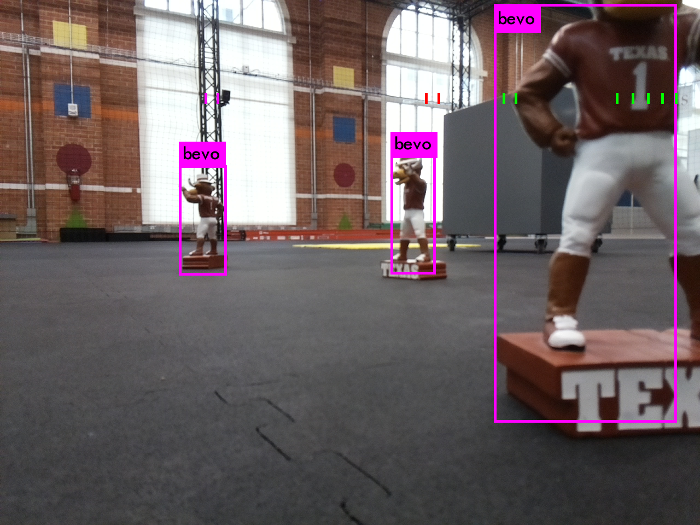

Using a Turtlebot3 for SLAM and object detection¶
Turtlebot detect slam is a ROS package designed for use with a Turtlebot3 Waffle Pi. The package utilizes the Turtlebot’s camera and lidar sensor to associate lidar points with objects detected by the camera. This data is then processed to form a local map of the objects. Developed for research done by UT Austin’s Autonomous Systems Group.
